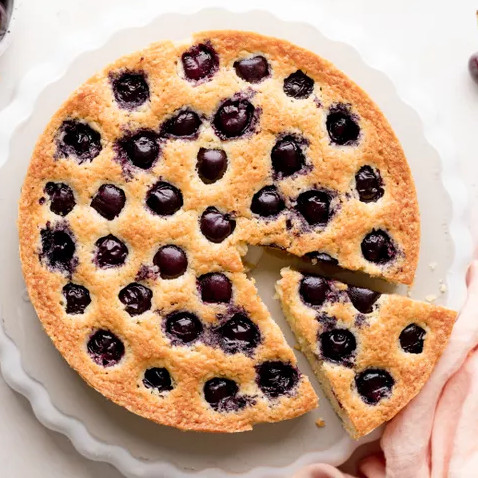

Cheery Pie recipe

Description
This rich butter cake is studded with fresh cherries and kissed with almond extract, which makes it the perfect snack cake for dessert or breakfast!
Ingredients
- 2 cups (240g) all-purpose flour, plus more for dusting
- 1 teaspoon baking powder
- 1/2 teaspoon salt
- 1 cup (2 sticks, 227g) unsalted butter, softened
- 1 1/4 cups (250g) granulated sugar
- 4 large eggs
- 1/2 teaspoon almond extract
- 2 1/2 cups (394g) fresh cherries, stemmed and pitted
Steps
- Preheat oven and prepare cake pan: Preheat the oven to 350°F. Grease a 10-inch springform cake pan with butter. Use your hands to dust the pan lightly with flour, then tap out any excess.
- Combine the dry ingredients: In a medium bowl, add the flour, baking powder, and salt. Whisk until combined.
- Beat the butter and sugar: In a large bowl, beat the butter and sugar with an electric mixer on medium-high speed until pale and fluffy, about 3 minutes.
- Incorporate the eggs and extract: Add the eggs, one at a time, beating until fully incorporated after each addition. Scrape down the bowl with a rubber spatula halfway through. The batter should be smooth, light, and fluffy. If the emulsion breaks after adding the eggs and the batter has separated, you can add a couple tablespoons of the flour and mix just until it becomes smooth again. Add the almond extract and mix on low speed to combine.
- Add the dry ingredients: Beat in the flour mixture on low speed, or gently fold it in with a rubber spatula, just until combined and no streaks of flour remain.
- Transfer batter to cake pan and add cherries: Transfer the batter to the prepared cake pan. Lightly press the pitted cherries into the batter, making a circular pattern. Don’t press them in too deep or the cake will envelop them while baking.
- Bake the cake: Bake the cake for about 1 hour, or until a toothpick inserted in the center of the cake comes out clean. The cake should be golden and will have risen around the whole cherries, which should still be visible on top.
- Cool cake: Remove from the oven. Allow to cool in the pan for 10 to 15 minutes before unmolding. Let it cool completely on a wire rack before serving.